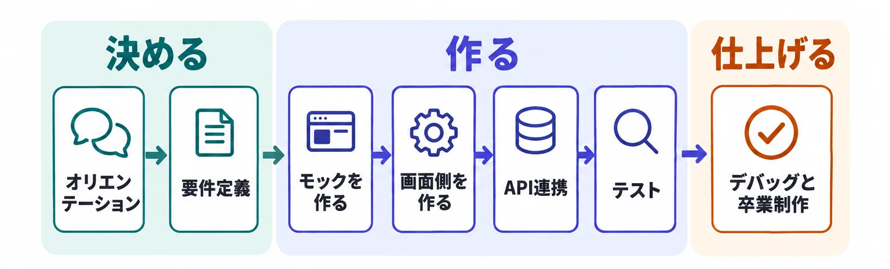

オリエンテーション ― このゼミで何をして、どう参加し、何を出せば修了か
AIを相棒に、自分専用ツールを作るゼミです。このページが第1回そのものです。ゼミの目的と進め方、全7回の流れ、修了要件、ご自身の期の開催日と入室先、困ったときの順番、第2回までに用意するものをまとめてあります。何を作るかを決めるのは第2回からです。

- 決める第1〜2回 オリエンテーション・要件定義
- 作る第3〜6回 モック → 動き → API 連携 → テスト
- 仕上げる第7回 デバッグと卒業制作
- ゼミの目的と「学習の場」としての位置づけを読む
- 学習サイクルと全7回の流れをつかむ
- 修了要件と、事前課題の出し方・締切の数え方を確かめる
- ご自身の期の開催日と入室先、Boarding Pass の入り方を見る
- 第2回までに用意するもの（Claude デスクトップアプリと有料プラン）を決める
- ご自身の期の開催日と Google Meet の入室先を開ける
- 修了要件の2つを、何も見ずに言える
- 「人が決めること」と「AI が担うこと」を1つずつ言える
- 困ったときの3ステップ（生成AIに聞く → ゼミ掲示板 → 課題提出フォームの質問欄）を言える
- Claude デスクトップアプリを入れ、有料プランをどうするか決めた
- このゼミの目的（自分の困りごとを題材に、動くものを1本作りきり、卒業後も自分で作り続けられる状態になる）を説明できる
- ハンズオンではなく「自習を前提とした学習の場」であることと、毎回の事前課題がそのまま制作の進捗になる理由を説明できる
- 学習サイクル（Lesson の自習 → 事前課題の提出 → LIVE講義 → 次の課題の確認）と、全7回の流れを説明できる
- 修了要件の2つと、事前課題の提出先・締切の数え方を説明できる
- 人が決めることと AI が担うことの分担、使うツール（Claude デスクトップアプリと Claude Code）、費用が発生する時期を説明できる
全7回の流れ
全7回は「決める → 作る → 仕上げる」の3つの段に分かれます。第1〜2回で何を作るかを決め、第3〜6回で見た目 → 動き → 裏側 → テストの順に1段ずつ作り、第7回で落ちないアプリに仕上げます。各回のページは、その回の LIVE講義に合わせて順次公開します。


この回は技術を教える回ではありません
このページが第1回そのものです。このゼミが何で、全7回で各回に何をやり、どう参加し、何を出せば修了かを通してご説明する回です。何を作るかを決めるのは第2回からですので、この回は開催日程とゼミの大枠をそろえるところまでにします。
第2回までに用意するものと、費用が出る時期
- 第2回まで：Claude デスクトップアプリ ＋ Claude の有料プラン。第2回は Claude デスクトップアプリでアプリのフォルダを開くところから始めます。Claude Code は無料プランでは使えないため、ここで費用が発生します。プランの種類と料金は変わることがあるので、最新は Claude の公式ページでご確認ください
- それ以降に使うソフトは無料のもので、必要になる回のページで入れ方をご案内します
- 第5回：AI 機能のための API（Claude・OpenAI・Gemini から1つ）。サービスによっては支払い方法の登録や前払いが要ります。Claude を選ぶ場合も、API の利用は第2回の有料プランには含まれず、別の支払いになります（Claude の公式ヘルプ）。無料で試せる範囲があるサービスもあります。料金と無料の範囲は変わるので、契約の前に各サービスの公式ページでご確認ください
第1回と第2回の間に LIVE講義は入りませんので、早めの着手をおすすめします。
- Claude デスクトップアプリ
- PC にインストールして使う Claude の公式アプリ。このゼミでは、この中から Claude Code を呼び出します。
- Claude Code
- 指示を出すと、PC のファイルを実際に作ったり書き換えたりしてくれるツール。画面に答えを表示するだけのチャットとは別のものです。
- API
- プログラムから、別のサービスの機能を呼び出すための決められた呼び出し方。AI のサービスを自分のアプリから呼ぶときに使います。
この回で押さえたいこと

アーカイブを見返す際の指針にどうぞ。
人が決めること と AI が担うこと は分かれている
人が決めるのは、何を作るか／どこまで作るか／出てきたものが正しいかの判断／直す指示。AI が担うのは、コードを書くこと／エラーの原因を推測すること／直すこと。コードが読めなくても進められるのは、この分担があるからです。
使うのは Claude デスクトップアプリと Claude Code
Claude Code は、本来はターミナル（文字で PC に命令する画面）から使いますが、このゼミでは Claude デスクトップアプリの中から使います。
なぜ：最初につまずきやすい箇所を1つ減らすためです。数あるツールの中で Claude Code を選んでいるのは、エンジニア以外の方が実際に使って手順を公開している例が多く、調べたときに出てくる情報が幅広いためです。ゼミが終わったあとにご自身で調べて進めるとき、ここが効いてきます。
画面の名称やボタンの文言は変わることがあります。最新の情報は公式のページをご確認ください。
講師紹介
AIアプリ開発入門ゼミの講師を担当します、宮﨑です。
DMM 生成AI CAMP 講師
宮﨑 竜治 Miyazaki Ryuji
営業職からエンジニアへキャリアチェンジ。組み込み・モバイル・Web・AI まで、案件ごとに異なる技術で開発に従事してきました。業務外では Swift / SwiftUI で iOS アプリを3本 App Store にリリースし、Claude Code 向けプラグイン「cc-DevelopmentTeam」を OSS として GitHub で公開しています。
エンジニア
コンサルティング営業
3本リリース
個人開発・公開
経歴を詳しく見る（リリース済みアプリ・技術スタック・これまでの主な業務）
リリース済みアプリ
| アプリ | 内容 | 公開先 |
|---|---|---|
| PetTrack | ペット管理アプリ。Swift / SwiftUI、Firebase Authentication / Cloud Firestore、MVVM 設計。 | App Store |
| ScanGuard | スキャン・セキュリティアプリ。 | App Store |
| －AIカメと遊ぶ－水平思考ゲーム | ChatGPT API を活用した AI アプリ。 | App Store |
主な技術スタック
Swift / SwiftUI（2年以上）・Dart / Flutter（1年以上）・C++ / Arduino（約半年）・Go / Echo（約半年）・Python（2年）・Java（約半年）・Claude Code・Dify
これまでの主な業務
| 時期 | 内容 |
|---|---|
| 2022.09〜 | 富士ソフト株式会社 組み込み／業務系エンジニア。ドライブレコーダー用ソフトウェアのテスト、Go / Echo での Web サイト開発、C++ / Arduino による電子タグ開発（要件定義・仕様書作成〜実装・テスト）、Flutter でのセルフレジシステム開発などに従事。 |
| 2025.07〜 | DMM Difyマスターコース メンター 受講生のメンター業務に従事。 |
| 2026.03〜 | DMM AI関連Workshop 担当 Dify メンター業務から Workshop 設計・開催へ移行。Claude Code をテーマにした Workshop も開催。 |
| 2026.04〜 | UNIT BASE株式会社 デジハク 専属メンター AI スクール「デジハク」生成AI PRO コース受講生へのキャリアメンタリングを担当。 |
| 2026.05〜 | DMM ゼミ 講師 「ClaudeCodeマスターゼミ」「Difyマスターゼミ」の講師・登壇者として、毎週の定例講義による学習支援を担当。 |
このゼミの目的
みなさんご自身が「作りたい」と思っているツールやシステムを、自分の手で形にすること。それがこのゼミの目的です。

このゼミは「学習の場」です
ワークショップ感覚で参加される方が多いので、最初に位置づけをお伝えしておきます。本ゼミはハンズオン形式のワークショップではなく、自習を前提とした学習の場です。
- 講師と一緒に、1行ずつコードを書き進めていく
- 「次はここをクリック」「次はこう入力」と、1ステップずつ全員で操作をなぞる
- その場で全員が同じ画面・同じ成果物を完成させて終わる
- 指定された Lesson を、LIVE の前までに各自で視聴・実践してくる
- LIVE は、提出課題の公開添削＋自習内容の補足解説＋次の課題の案内が中心
- 「ここを手元でやってみてください」とお声がけする場面はあります
ゼミの学習サイクル
LIVE講義のたびに「事前準備（各自で）」と「LIVE講義」の流れをくり返します。
事前準備：Lesson の自習
講師が指定する DMM 生成AI CAMP の Lesson を、LIVE講義の前までに視聴・実践してきていただきます。
事前準備：事前課題の提出
Lesson に対応した事前提出課題を、専用フォームから提出していただきます（第1回までの課題はありません）。
LIVE講義：公開添削・Q&A ／ インプット解説
提出課題から、みなさんが引っかかる点・改善点・良かった点を取り上げて共有し、補強したい内容を解説します。
LIVE講義：次の課題の確認
次の LIVE講義までの Lesson と事前提出課題を確認して、次のサイクルへつなぎます。
ゼミのルール・修了要件

以下を満たさない場合は、修了証の発行ができません。
| 要件 | 補足 | |
|---|---|---|
| ① | 事前課題を4回以上提出する（第2回〜第7回の6回が対象） | 締切は各回の開催3日前まで。第1回までの課題はありませんので、課題があるのは第2回〜第7回の6回分です |
| ② | 卒業制作を提出する | このゼミで作ってきた「自分専用ツール」が、そのまま卒業制作になります。条件は第7回でご案内します |
提出先：「ゼミ参加者向け 事前課題提出受付フォーム」からお送りください（期日：各ゼミの開催3日前まで）。詰まったときは、先に「分からないことが出てきたらこの順番で」の STEP 1・2 をお試しください。
LIVE講義のアーカイブ：「ツール別コース ＞ ゼミアーカイブ動画」で公開されます。LIVE講義実施日から2日以内ほどでの公開となりますこと、ご容赦ください。なお、LIVE講義で配布した資料・リンク・プロンプト等の再配布は原則行っておりません。
演習サイト Boarding Pass
第2回から、その回で扱った内容の理解度チェックを Boarding Pass で行います。選択式の問題を解くと、その場で採点され、正解と解説が出ます。
開催スケジュールと参加方法
全7回。開催日・時間・入室先は期ごとに違います。ご自身の期を開いてご確認ください。LIVE講義は Google Meet で行います。
5期 2026年9月〜11月
6期 準備中
6期：開催日・時間・入室先は準備中です。決まり次第、DMM 生成AI CAMP のゼミスレッドでご案内し、このページにも載せます。進め方・全7回の流れ・修了要件は、期が変わっても同じです。
- リンクを選択した際にアプリのダウンロードページに飛ぶ場合は、お手数ですがダウンロードしたうえで、改めてリンクからご入室ください
- 画面にぐるぐると回る円が表示されて入室できない場合は、ブラウザのキャッシュクリアと再起動をお試しください
分からないことが出てきたらこの順番で

学習中・課題実施中に詰まったら、以下の順で進めてください。1人で抱え込まないことが一番大事です。作り始めるとエラーが必ず出ますが、エラーは失敗ではなく作業の一部です。
まずはスクショして AI に聞く
エラー画面・つまずいた画面をスクリーンショットで撮り、Claude／ChatGPT／Gemini など普段使っている生成AIに貼り付けて質問してみてください。精度を上げるコツは、「何をしようとしていたか」「どうなる予定だったか」「実際にどうなったか」の3つをスクショに添えることです。
なぜ：環境まわり・コマンドのエラー・画面の操作迷子は、多くがここで解決します。いちばん早く答えが返ってくる手段から使います。それでも解決しなければ、ゼミ掲示板へ
AI に聞いても解決しない／そもそも何を聞けばいいか分からない場合は、DMM 生成AI CAMP 学び放題の上部ナビゲーション「ゼミ掲示板」から投稿してください。他の受講生・運営・講師が回答できます。投稿には、①実現したかったこと ②試したこと（STEP 1 の AI とのやり取りも含めるとなお良い）③つまずきポイント（スクショ歓迎）④環境（OS／ツール／バージョン）を書いてください。
なぜ：同じ「動かない」でも、環境と試したことが違えば原因はまったく別です。4つがそろっていると、答える人が前提をそろえて回答でき、同じところで詰まったほかの人もあとから探せます。それでも解決しなければ、課題提出フォームの質問欄へ
掲示板でも解決しないときは、「ゼミ参加者向け 事前課題提出受付フォーム」の質問欄に書いてください。書くことは STEP 2 の4つと、掲示板に投稿した場合はそのことと返ってきた回答です。共通の内容は LIVE講義で回答します。1件ずつの個別の返信はお約束できません。
この回で使うガイドと演習

事前課題（提出するもの・締切）は、commmune のゼミスレッドの講師の投稿が正です。